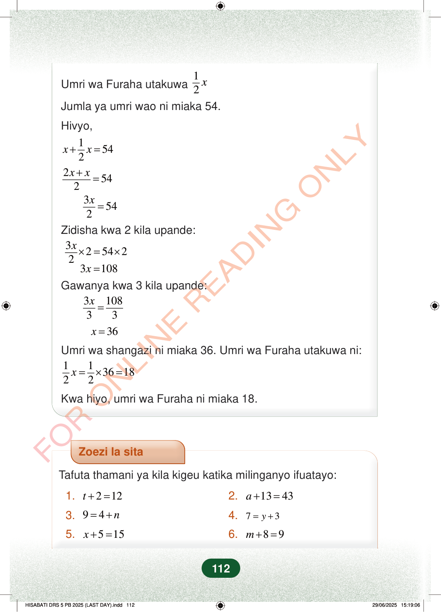

Umri wa Furaha utakuwa12xJumla ya umri wao ni miaka 54.Hivyo,1542xx+=2542xx+=3542x=Zidisha kwa 2 kila upande:325422x×=×3108x=Gawanya kwa 3 kila upande:310833x=36x=Umri wa shangazi ni miaka 36. Umri wa Furaha utakuwa ni:11361822x=×=Kwa hiyo, umri wa Furaha ni miaka 18.Zoezi la sitaTafuta thamani ya kila kigeu katika milinganyo ifuatayo:1.212t+=2.1343a+=3.94n=+4.73y=+5.515x+=6.89m+=112
Umri wa Furaha utakuwa 1
2 x
Jumla ya umri wao ni miaka 54.
Hivyo,
1 54 2 x x + =
2 54 2 x x + =
3 54 2 x =
Zidisha kwa 2 kila upande:
3 2 54 2 2 x × = ×
3 108 x = Gawanya kwa 3 kila upande:
3 108 3 3 x =
36 x =
Umri wa shangazi ni miaka 36. Umri wa Furaha utakuwa ni:
1 1 36 18 2 2 x = × =
Kwa hiyo, umri wa Furaha ni miaka 18.
Zoezi la sita
Tafuta thamani ya kila kigeu katika milinganyo ifuatayo:
1. 2 12 t + = 2. 13 43 a + =
3. 9 4 n = + 4. 7 3 y = +
5. 5 15 x + = 6. 8 9 m + =
112
Hatua za kutatua mlinganyo wa umri: x + nusu x = 54, kisha x = 36. Mwisho unaonyesha shangazi ana miaka 36 na Furaha ana miaka 18.Umri wa Furaha utakuwa <math><mrow><mfrac><mn>1</mn><mn>2</mn></mfrac><mi>x</mi></mrow></math>Jumla ya umri wao ni miaka 54.Hivyo,<math><mrow><mi>x</mi><mo>+</mo><mfrac><mn>1</mn><mn>2</mn></mfrac><mi>x</mi><mo>=</mo><mn>54</mn></mrow></math><math><mrow><mfrac><mrow><mn>2</mn><mi>x</mi><mo>+</mo><mi>x</mi></mrow><mn>2</mn></mfrac><mo>=</mo><mn>54</mn></mrow></math><math><mrow><mfrac><mrow><mn>3</mn><mi>x</mi></mrow><mn>2</mn></mfrac><mo>=</mo><mn>54</mn></mrow></math>Zidisha kwa 2 kila upande:<math><mrow><mfrac><mrow><mn>3</mn><mi>x</mi></mrow><mn>2</mn></mfrac><mo>×</mo><mn>2</mn><mo>=</mo><mn>54</mn><mo>×</mo><mn>2</mn></mrow></math>3x = 108Gawanya kwa 3 kila upande:<math><mrow><mfrac><mrow><mn>3</mn><mi>x</mi></mrow><mn>3</mn></mfrac><mo>=</mo><mfrac><mn>108</mn><mn>3</mn></mfrac></mrow></math>x = 36Umri wa shangazi ni miaka 36.Umri wa Furaha utakuwa ni:<math><mrow><mfrac><mn>1</mn><mn>2</mn></mfrac><mi>x</mi><mo>=</mo><mfrac><mn>1</mn><mn>2</mn></mfrac><mo>×</mo><mn>36</mn><mo>=</mo><mn>18</mn></mrow></math>Kwa hiyo, umri wa Furaha ni miaka 18.Zoezi la sita la kutafuta thamani ya kigeu katika milinganyo sita: t + 2 = 12, a + 13 = 43, 9 = 4 + n, 7 = y + 3, x + 5 = 15, na m + 8 = 9.Zoezi la sitaTafuta thamani ya kila kigeu katika milinganyo ifuatayo:1.t + 2 = 122.a + 13 = 433.9 = 4 + n4.7 = y + 35.x + 5 = 156.m + 8 = 9